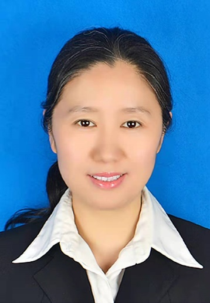
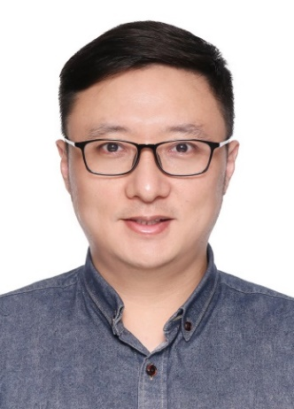
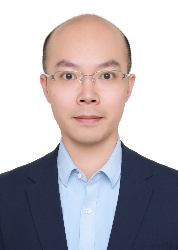

PEOPLE / TEACHING TEAM
授课教师
先进数据与机器智能系统实验室 · ADMIS

关佶红教授
Jihong Guan
博士，同济大学长聘教授、博士生导师，先进数据与机器智能系统实验室（ADMIS）负责人。
研究方向：人工智能、机器学习、大数据智能分析、生物医学。
主持国家科技部重点专项课题、国家自然科学基金等科研项目。曾获教育部科学技术进步二等奖、教育部自然科学二等奖及宝钢优秀教师奖等。
jhguan@tongji.edu.cn
张毅超副教授
Yichao Zhang
博士（同济大学），同济大学副教授、博士生导师。
研究方向：社交网络分析、多模态智能。
研究成果发表于 IEEE TC、IEEE TSMC、IEEE TNSE 等期刊。担任 CCF 数据库专委会执委、中国工业与应用数学学会复杂网络与复杂系统专委会委员。
yichaozhang@tongji.edu.cn
李文根副教授
Wengen Li
博士（同济大学 / 香港理工大学），同济大学副教授、博士生导师。
研究方向：时空智能、多模态 AI。
研究成果发表于 IEEE TITS、IEEE TGRS、IEEE TKDE 及 CVPR、KDD、ICDE 等期刊与会议。入选上海浦江人才计划，担任 CCF 数据库专委会执行委员。
lwengen@tongji.edu.cn